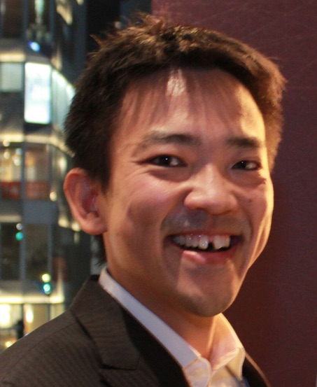

2-15-45 Mita, Minato-ku, Tokyo 108-8345, Japan
Phone: +81-3-5427-1595
執筆・取材・メディア出演などの依頼: kawaharashigeto.info@gmail.com（マネージャー田中）
Phone: +81-3-5427-1595
執筆・取材・メディア出演などの依頼: kawaharashigeto.info@gmail.com（マネージャー田中）
About Me
Current Academic Affiliations & Positions
- Professor, The Institute of Cultural and Linguistic Studies, Keio University
- Associate Editor, Phonology (Cambridge Univ. Press)
- Editorial Board, Phonetica
- Editorial Board, Natural Language and Linguistic Theory
- Editorial Board, Phonological Data and Analysis
- Founding & Current Board Member, ICU Linguistics
Erdős Number: 4
Kawahara → Kingston → Nichols → Warnow → Erdős
Bacon Number: 3
Kawahara → Mone Kamishiraishi → Alan Menken → Kevin Bacon
Kawahara → Kingston → Nichols → Warnow → Erdős
Bacon Number: 3
Kawahara → Mone Kamishiraishi → Alan Menken → Kevin Bacon

Research Interests
- Sound symbolism and its relation to theoretical phonology
- Probabilistic phonology, MaxEnt and quantitative models
- Phonetics and its application to singing
- Bayesian statistics for linguistic analyses
- Open science and replication practices in linguistics
- Phonetics and phonology of voicing and geminates
- The interplay between phonetics and phonology
- Phonological data quality and judgment experiments
- Speech perception and its relation to phonology
- Accent and intonation
Current & Recent Projects
- Pokémonastics
- Lingual articulation of devoiced vowels and geminates with EMA (with Francesco Burroni, Jason Shaw, and Lia Saki Bucar Shigemori)
- Learning about Bayesian analyses, open science initiative, and replication in linguistic research
- Information theory for phonological and phonetic analyses (with Jason Shaw and Beth Hume)
- Finite Element Method for 3-D vocal tract airflow analysis (with Mutsuto Kawahara and RCCM)
- Sound symbolism (with Kazuko Shinohara and others)
- Phonological judgment experiments
- Duration patterns
- Phonetics and phonology of geminate devoicing in Japanese
- Rendaku and Lyman's Law from various perspectives
- Articulatory correlates of metrical phrasing in English and Japanese (with Donna Erickson)
- Phonetics of Japanese via EMA (with Donna Erickson and Atsuo Suemitsu)
- Accent and intonation in East Asian languages (with Yurie Hara)
- Japanese puns: experimental and corpus-based approach (with Kazuko Shinohara)
- Linguistic knowledge and speech perception (with John Kingston)
- Other projects that students are interested in